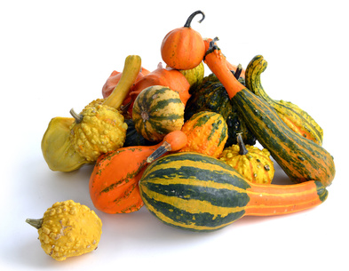

Squash, Pumpkins, Zucchini & Other Gourds (Cucurbita spp.)

The genus Cucurbita contains several species, each with multiple varieties, which are familiar vegetables cultivated in Ontario. The group includes pumpkins, edible winter and summer squash, edible and ornamental gourds, and zucchini (sometimes known as courgettes). Many people do not realize how closely related these seemingly diverse foods are.
Mating & Breeding System: Individual plants bear separate male and female flowers, with many more male flowers usually being present. Both male and female flowers produce nectar, but the male nectar has a higher sugar concentration. Flowers of both sexes are typically open for only a single day, after which male and insufficiently pollinated female flowers will drop. Insects are required to move large quantities of pollen for fertilization of the numerous ovules within the female flowers. The most successful pollinators are active in the morning, when pollen is released.
Pollination, Quality & Yield: Large quantities of pollen must be delivered to a female flower if it is to set a marketable fruit. Cross-pollination also delivers larger individual fruits. Native bees such as bumble bees and the hoary squash bee (Peponapis pruinosa, a specialist pollinator of these crops found where cucurbits have been continuously grown) begin foraging earlier in the day than honey bees, when flowers are at their most fertile. While wild pollinators are typically sufficient for fruit set, addition of honey bees can maximize the number of visits per flower, and therefore the size and value of the resulting fruit.
Pollination Recommendations: Cross-pollination can occur between different varieties within the same species of Cucurbita, but may lead to undesirable characteristics in the resulting product. Varieties should not be grown near each other, especially if seed is desired for future planting. Wild bee populations, particularly that of the native squash bee (Peponapis pruinosa), can be sufficient to pollinate squash and pumpkin on farms managed with pollinator-friendly practices. Care must be taken to avoid damaging the in-ground nests of this bee, particularly during cultivation. Managed honey bees and bumble bees may be superfluous if wild pollinator populations are adequate. However, the addition of honey bees or bumble bees should be considered for larger fields to improve pollination in the center of the field. On hot days shade and water should be provided for the bees. Recommended stocking rates vary widely, from 1-8 colonies per hectare, depending on plant density. Further research is required to determine suitable densities of hive placement.
References
Artz, D.R. & Nault, B.A. 2011. Performance of Apis mellifera, Bombus impatiens, and Peponapis pruinosa (Hymenoptera: Apidae) as pollinators of pumpkin. Journal of Economic Entomology 104:1153-1161.
Bodnar, J. 1987. Pollination of vine crops. OMAFRA FactSheet 87-043.
Cane, J.H., Sampson, B.J., & Miller, S.A. 2011. Pollination value of male bees: the specialist bee Peponapis pruinosa (Apidae) at summer squash (Cucurbita pepo). Environmental Entomology 40:614-620.
Delaplane, K.S. & Mayer, D.F. 2000. Crop Pollination by Bees. CABI Publishing, New York.
Julier, H.E. & Roulston, T.H. 2009. Wild bee abundance and pollination service in cultivated pumpkins: farm management, nesting behavior and landscape effects. Journal of Economic Entomology 102:563-573.
Kevan, P.G. 1988. Pollination, crops and bees. OMAFRA publication 72.
Nepi, M. & Pacini, E. 1993. Pollination, pollen viability, and pistil receptivity in Cucurbita pepo. Annals of Botany 72:527-536.
Sampson, B.J., Knight, P.R., Cane, J.H., & Spiers, J.M. 2007. Foraging behavior, pollinator effectiveness, and management potential of the new world squash bees Peponapis pruinosa and Xenoglossa strentia (Apidae: Eucerini). HortScience 42:459.
Shuler, R.E., Roulston, T.H., & Farris, G.E. 2005. Farming practices influence wild pollinator populations on squash and pumpkin. Journal of Economic Entomology 98:790-795.
Tepedino, V. J. 1981. The pollination effciency of the squash bee (Peponapis pruinosa) and the honey bee (Apis mellifera) on summer squash (Cucurbita pepo). Journal of the Kansas Entomological Society 54:359-377.
Walters, S.A. & Taylor, B.H. 2006. Effects of honey bee pollination on pumpkin fruit and seed yield. HortScience 41:370-373.
Willis, D.S. & Kevan, P.G. 1995. Foraging dynamics of Peponapis pruinosa (Hymenoptera: Anthophoridae) on pumpkin (Cucurbita pepo) in southern Ontario. The Canadian Entomologist 127:167-175.